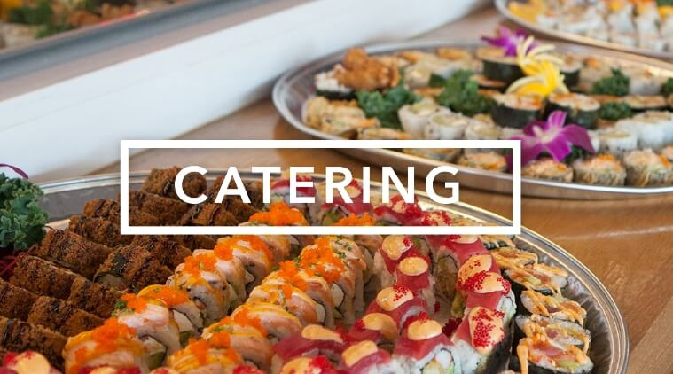

A catering business is a company that prepares and provides food for different types of events. .If you host dinner parties for your family and friends every chance you get, you're up on food trends and you have an entrepreneurial spirit, consider starting a catering business.
CATERING BUSINESS

These are the most effective ways I've found to market a catering business.
- Focus Your Efforts on Building Word-of-Mouth Buzz and Referrals
- Leverage an Army of Bloggers to Help.
- Build Your Visual Brand on Social Media.
- Get Placement on “Preferred Vendor” Venue Lists.
- Work a Few Morning Farmer's Markets.
- Treat Local Businesses to a Few Sample Platters
Here are seven types of catering services offered by most catering companies:
- Wedding Services Catering
- Corporate Catering.
- Cocktail Reception
- Bento Catering.
- Buffet Catering.
- Sit-down Catering.
- Petite Take-Away Buffet Catering.
Here are seven types of catering services offered by most catering companies:
- Wedding Services Catering.
- Corporate Catering
- Cocktail Reception.
- Bento Catering
- Buffet Catering.
- Sit-down Catering.
- Petite Take-Away Buffet Catering.
Eight Benefits of Having Your Corporate Event Catered
- Accommodations for Dietary Restrictions
- Classic Food Options.
- Cost-Effective Meal Planning.
- Expert Help With Permits and Handling
- Positive Impressions of Your Company.
- Reduced Stress and Responsibility.
- Set Event Tone and Atmosphere.
- Varying Menu Options.
How do you start a catering business from home?
If you're ready to start cooking, here are the steps to starting your home-based catering business. Decide what type of catering you want to do. Contact your state occupational licensing or health department to learn what permits you need and any laws you need to abide by. Set up your business structure.
With commission cuts and clients' ability to book on their own, selling airline tickets was no longer profitable for many travel agencies. ... With lower profit margins, travel agencies are relatively unique in the world of big ticket items.
Do you need a license to cater?
To operate any type of food establishment such as a restaurant, taco stand or a catering business, you will need a Food Establishment License. In most states the Department of Health provides these licenses. ... Ensuring staff have the proper training for Food Certification is often mandatory as well.
Where can I sell homemade food?
The best places for selling homemade food are farmers markets, farm stands, and places such as craft fairs where consumers purchase directly from whoever cooks the food. Items baked at home generally cannot sell within stores or restaurants unless the home kitchen has been certifie
How to Sell Food Online: A Comprehensive Guide
- Step 1: Legal and Licensing Aspects to Know Before You Learn How to Sell Food Online. ...
- Step 2: Find a Reputable Supplier
- Step 3: Consider What Your Packaging and Labeling Is Going to Be Like.
- Step 4: Set Up Your Online Store.
- Step 5: Start Marketing For Foodies.
- Reference: https://youtu.be/6DsbKIJC5CY
Caterers seeing events postponed, business canceled because of coronavirus in R.I.
A trained chef, she started the business in 1997. Now they have a 33,000-square-foot commissary in Providence and a 26,000-square-foot warehouse in West Warwick where they store everything clients need to rent for events, from tents to tablecloths.
Closures, Takeout, and Relief Efforts: How Food Businesses Nationwide Are Handling Coronavirus
Since the first case of coronavirus in the U.S. was confirmed in February of this year, restaurants and food businesses around the country have been affected in various ways. As the virus continues to spread, we’ve asked food industry workers from coast to coast to send us notes about what they're seeing in their communities and how their businesses are being affected.

COPING WITH COVID: Hamby Catering and Events, High Spirits Hospitality
“It’s been a roller coaster of emotions around here,” said Candice Wigfield, owner and president of the Charleston company. “There have been very low lows and very high highs, but the sense of camaraderie and the willingness for everyone to get creative and to pitch in and really work harder than we have ever worked before — it brings tears to my eyes every time I just step back and just kind of take in what we are trying to do.”

Seattle small-business owners rally to help others so coronavirus crisis is ‘not just doom and gloom’
BizX founder Bob Bagga launched his Bellevue-based bartering currency company in the chaotic aftermath of the Sept. 11, 2001, terror attacks. He sees parallels with the fear now gripping the local business community.
Catering Service Template
Take your list of all of all of your food truck customers and call or e-mail them. Ask them if they know of anyone seeking catering services right now, and if they can give you a personal referral. Then, contact the referrals they give you and see what happens.
How to Set a Table | Restaurant Business
When I was a child, my task at home was to set the table. I think a lot of people grew up with the chore of setting the table in their house. Interestingly enough, when you become a restaurant professional, you spend a lot of time setting tables. Setting tables is all about making it prepared for what is to come. When you are setting a table, your goal is to make sure that the guests have
Satisfying Food Manufacturing Process You Must See
Food manufacturing involves strict processes through which ingredients are combined and turned into snacks, meals, and other foods we eat on a daily basis. If you've ever wondered how food manufacturing works this video can help you out. Check it out.
Agribusiness, Food Processing & Technology Industry
Agribusiness, Food Processing and Technology is one of seven targeted industries identified for growth by the Fond du Lac County Economic Development Corporation (FCEDC). Watch these three businesses - Kelley Country Creamery, Baker Cheese and Rosendale Dairy - who take their business
Food Machinery and Technology Exhibition: Gyoza machine and robotic arms
On display at Fooma 2010 in Tokyo was the World's smallest gyoza (Chinese dumpling) machine by TOA Industries, as well as some fascinating robotic arms by Sanmei and Nikko.